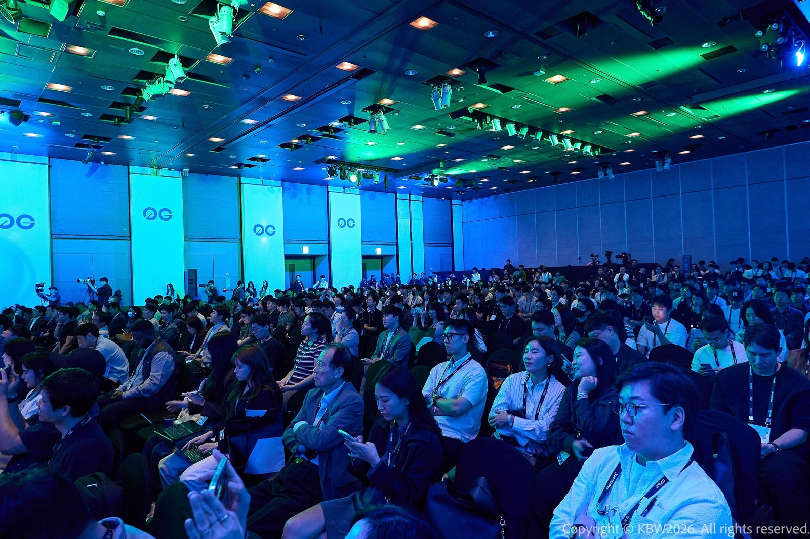

Conferences · Crypto / Web3
Korea Blockchain Week 2027 (KBW2027)
- Dates
- Dates TBA
- Location
- Seoul, South Korea
- Format
- In-person
- Category
- Crypto / Web3
- Industry
- Blockchain / web3
- Organiser
- FACTBLOCK
- Expected attendance
- 11,500
- Official website
- https://koreablockchainweek.com/
About
Topics: crypto, blockchain, web3, AI, stablecoins.
Official KBW site: 2026 edition 'Attendees 11,500 +'.
Sources
- Official — https://koreablockchainweek.com/